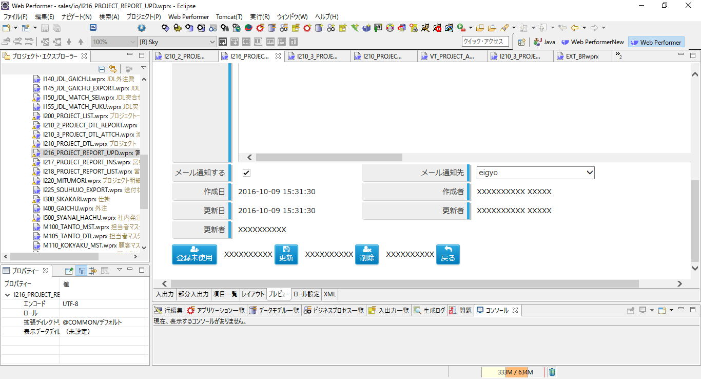
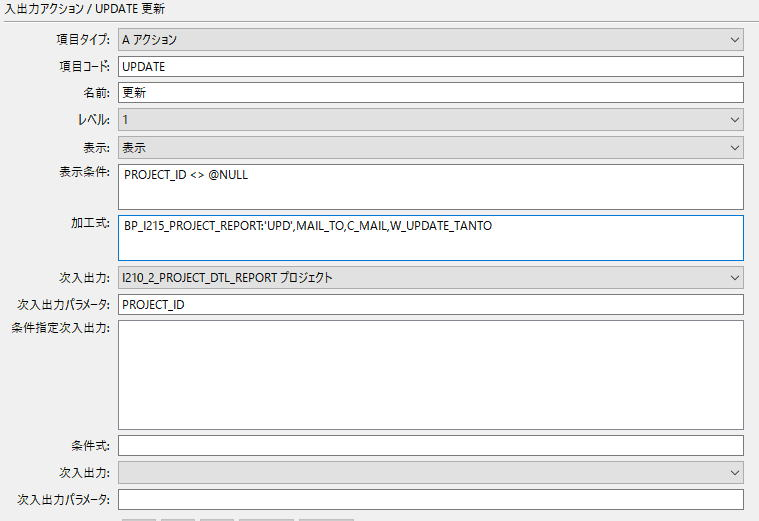
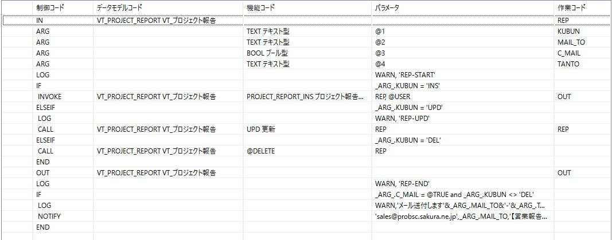
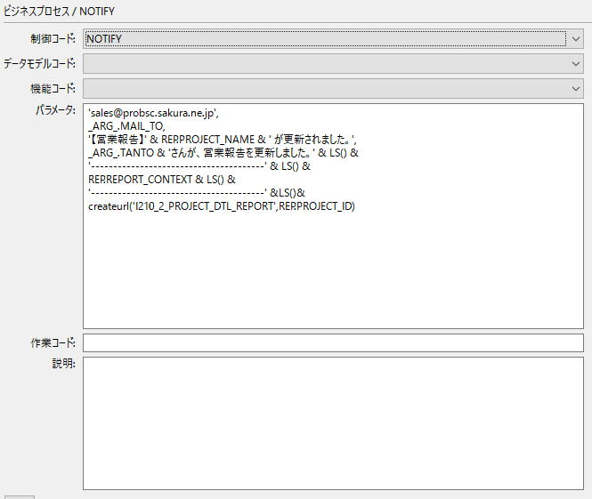
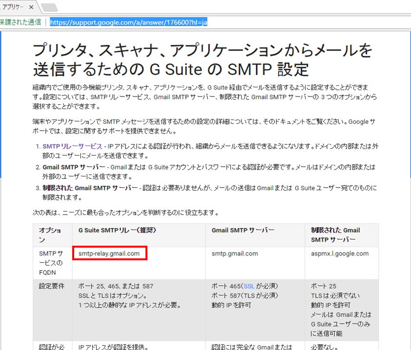

TEL. 022-200-9006
〒980-0014 宮城県仙台市青葉区本町2-3-10 仙台本町ビル
実装イメージ
メール通知する」にチェックして更新ボタンが押されたら、更新と同時にメール送信します。
更新ボタンよりビジネスプロセスを呼び出します。<br>
加工式: BP_I215_PROJECT_REPORT:'UPD',MAIL_TO, C_MAIL,W_UPDATE_TANTO
制御コード：INVOKE でデータ更新のビジネスプロセスを呼び出しています。
制御コード：NOTIFY がメール送信箇所です。
NOTIFYコマンドのパラメータは
送信元、送信先、件名、本文 です。
_ARG_.xxx はビジネスプロセスへのパラメータを表し、
LS() はOS改行文字、
REP.XXX はビジネスプロセスに紐付けられているモデル、
CREATEURL関数は この画面への直接リンクを表現する関数になります。

eclipse/plugins/jp.co.canon_soft.wp.generator.ui_2.0.0/model/JavaWebApp/WEB-INF/src/wpapp.confをsrc/JavaWebApp/<APPLICATION_NAME>/WEB-INF/src/wpapp.conf にコピーします。
| 値の書換え mail.smtp.host=probsc.sakura.ne.jp ← SMTPメールサーバー 行追加 mail.session.jndi=mail/Session ← 任意の名前でOK mail.session.apply=true |
補足しておくと、GMAILから送信出来ないか、2〜3時間粘りましたが、
今のところ成功していません。うまく設定出来た方、ご一報下さい…
2017.1.20 追記)
「G Suite SMTPリレー」という機能を使うとGMailからメール送信出来ました。
参照 → https://support.google.com/a/answer/176600?hl=ja
ポイント
・SMTPサーバーに smtp-relay.gmail.com を指定する
・server.xml に mail.smtp.auth="false" とする
<TOMCAT_HOME>/conf/以下のserver.xml, context.xmlに記述します。
※値を変更した場合はTomcat再起動が必要です。
※TOMCAT7で動作確認
| <context> <ResourceLink global="mail/Session" name="mail/Session" type="javax.mail.Session"/> </context> |
| <GlobalNamingResources> <Resource name="mail/Session" auth="Container" type="javax.mail.Session" mail.smtp.host="probsc.sakura.ne.jp" ← SMTPメールサーバー mail.smtp.auth="true" mail.smtp.user="メールアドレス" mail.smtp.pwd="パスワード"/> </GlobalNamingResources> |
Java Mailライブラリのバージョンとしては古いのですが、WebPerformerのマニュアルで指定されているので、ヘタに逆らってもハマるだけです・・・
mail.jar, activation.jarを以下よりダウンロードし、<TOMCAT_HOME>/lib にコピーします。
■JavaMail API Release 1.3.3
http://www.oracle.com/technetwork/java/javamail-1-3-3-137201.html から
javamail-1_3_3_01.zip をダウンロードし、中からmail.jarを取り出す。
■JavaBeans Activation Framework http://www.oracle.com/technetwork/java/javasebusiness/downloads/java-archive-downloads-java-plat-419418.html#jaf-1.1.1-fcs-oth-JPR から
jaf-1_1-fr.zip をダウンロードし、中からactivation.jarを取り出す。
〒980-0014
宮城県仙台市青葉区本町2-3-10
仙台本町ビル
TEL 022-200-9006
FAX 022-721-3503
URL http://nanairo-inc.jp
採用サイト https://nanairo-inc.jp/graduate_recruitment
Mail
ishimori_yuzuru☆nanairo-inc.jp
担当 石森